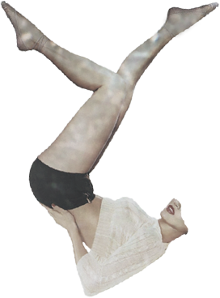
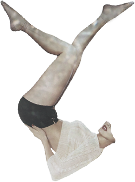
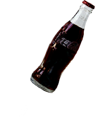
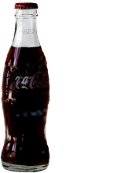
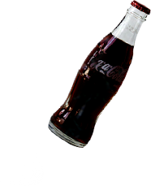
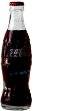

Click the moving objects
to see the Invisible Corset
Click the object again
to go back a previous page
Invisible
Corset


 


 



Apple Hip
애플힙 [aepeulhip] : The meaning of the Apple Hip is a well-rounded, big and lifted hips.
The ideal size of Apple Hips is 34inch with 24inch of waist. People who searched Apple Hip also looked up
Squat,
Apple Hip Surgery, and
Hips.
Backside of Deity
뒷태여신 [dwistaeyeosin] : It is a compliment on the beautiful body shape, not the face.
This specially refers to a woman with a slender back, and round bum.
Does that mean women should have a beautiful back, too?
People who searched Backside of Deity also looked up
Hair,
Style, and
Instagram.
Natural Beauty
자연미인 [jayeonmiin] : A beautiful woman who hasn‘t had any medical treatment or plastic surgery is appraised as ‘Natural Beauty’.
If she is still beautiful without makeup, she can be called ‘True Natural Beauty’.
People who searched Natural Beauty also looked up
Plastic surgery,
Natural Beauty Celebrity, and
Reservation. Ironically, people seem to be interested in both concepts of Natural Beauty and plastic surgery.
Juicy Face
과즙상 [gwajeupsang] : It means a girlish face with rosy cheeks, a small and round face.
This word also implies an innocent and cute face. There are peach-face or apple-face as its derivatives.
People who searched Juicy Face also looked up these images.
Honey Thigh
꿀벅지 [kkulbeokji] : It indicates a slightly thick and muscular thigh. However, the leg and ankle should be thin and skinny.
What does honey have to do with thighs? There is a argument that the word objectifies a woman's body and compares woman to food.
People who searched Honey Thigh also looked up
Thigh,
Exposure, and
Pants.
Golden Pelvis
황금골반 [hwanggeumgolban] : It indicates a pelvis with a golden ratio of 0.7 by dividing the pelvic circumference into waist circumference.
It sounds similar to Apple Hip, but Godel Pelvis especially indicates the woman's shape wearing tight cloth.
People who searched Golden Pelvis also looked up these images.
Bagel Girl
베이글녀 [beigeulnyeo] : It is a compound word combining ’baby’ and ’glamorous’.
It means a woman has a face like a baby but a glamorous body.
People who searched Bagel Girl also looked up
Body shape,
Quality, and
Call-girl. In fact, most of words people searched imply prostitution in South Korea.
Coke Bottle Shape
콜라병몸매 [kollabyeongmommae] : It means that a woman’s curvy body like a Coca-Cola bottle. Its synonym is 'Wasp(ant) waist'.
It is similar to Apple Hips and Golden Pelvis, but this more refers to the entire body shape from the boobs to the hipline.
People who searched Coke Bottle Shape also looked up these images.